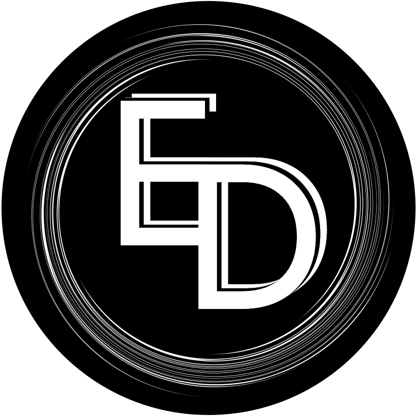

Добро пожаловать!

My name is ExeWire.
Web-frontend разработчик, изучаю Python, планирую изучить C#. Здесь вы увидите все мои проекты, над которыми я в данный момент работаю постоянно.
Добро пожаловать!
My name is ExeWire.
Web-frontend разработчик, изучаю Python, планирую изучить C#. Здесь вы увидите все мои проекты, над которыми я в данный момент работаю постоянно.
Уже год, как я разрабатываю экспериментальное расширение, которое перекрашивает все популярно-кликабельные сайты в полностью чёрный цвет, позволяя с максимальным комфортом посещать сайты в ночное время суток! Из-за того, что внутри расширения располагаются другие 15 расширений, я не могу выложить его в WebStore из-за всяческих лицензионных соглашений - я просто соединил все мелкие расширение во едино для экономии.
Я мечтал написать свою пародию на операционную систему и моя мечта осуществилась - после изучения HTML, CSS, JS и моему знакомству с Electron, я написал приложение, которое внешне напоминает систему! Да-да, я знаю, что никому не нравится Electron, ибо это "урезанный Chrome", но есть ли другой вариант? Пока аналогов нет или пока я не изучу что-то подходящее, увы, будет так.
Discord, Telegram, VimeWorld, Prime World - и это не предел! Я крашу в чёрный всё, что кажется мне уместным, чтобы его покрасили в чёрный!
На данный проект ушло три месяца изучения всех нюансов в скин-движке и всё делалось чисто ради эксперимента. А скин получился довольно хороший.
Я обнаружил аудиоплеер в китайском WebStore для браузера Whale, перекрасил в чёрный и перевёл его! Теперь, оно работает в браузерах Vivaldi, Opera и подобным браузерам с поддержкой боковой линии. Все иконки также переделаны.
Перекрасил также расширение Stylus. Теперь, оно менеее лагучее и в нём приятно работать. Но хочу вас предупредить: подсветки нет, весь код белый. С одной стороны, это будет вам неудобно, но с другой, вы будете знать не цвет кода, а сам код, лол. Кстати, здесь выпилена аналитика.